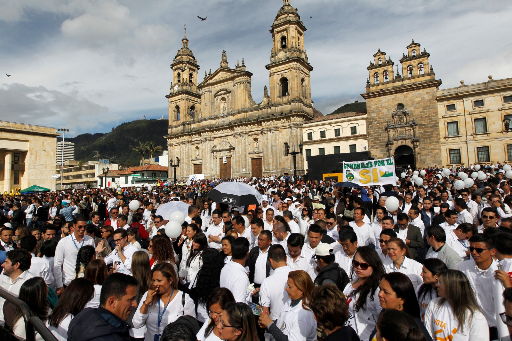
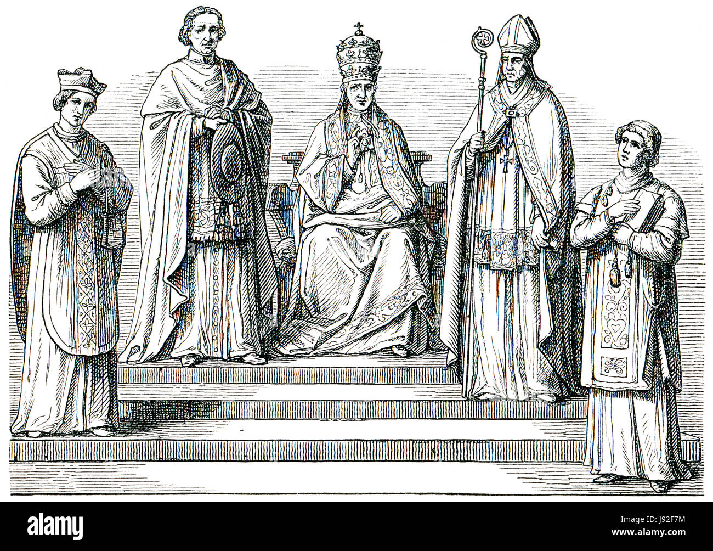
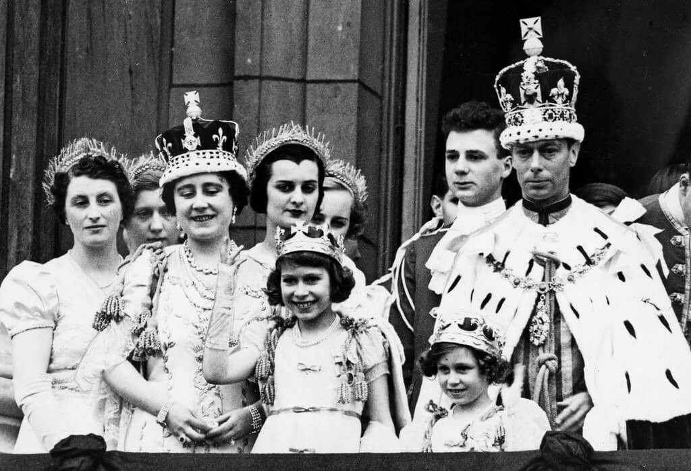
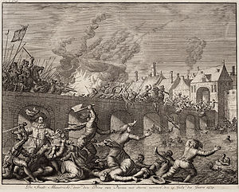
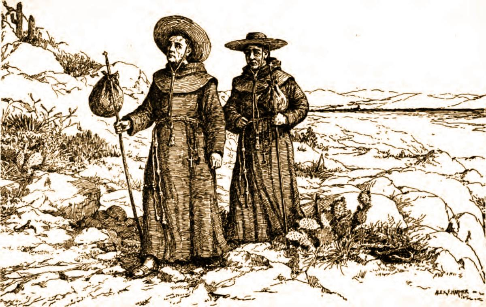
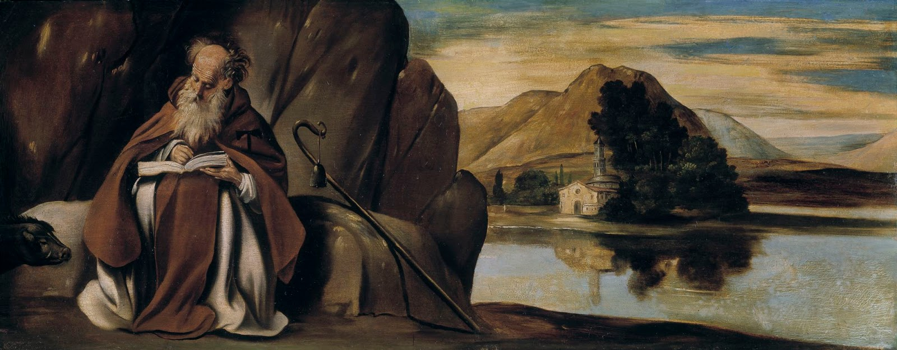
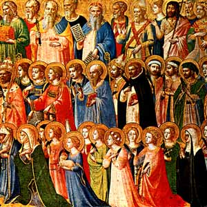

Catalina Tuza's last will and testament offers a fascinating insight into the intersection of indigenous leadership and Catholic faith in colonial Latin America. Demonstrating her knowledge of Catholicism, Tuza requested a church burial and made significant donations to religious institutions. Her will reflects not only personal devotion but also a strategic use of Catholic practices to assert status and influence. By funding a chapel in her village and arranging for masses, Tuza utilized her wealth and position to reinforce her family's prestige and ensure spiritual welfare, illustrating the complex interplay between indigenous leadership and Catholicism in the colonial era. A Spanish priest was also paid to visit the chapel to say masses for her and her parents’ departed souls, which cost thousands of pesos.
Catholic Power & Influence
Catalina Tuza’s Catholic Faith
The hierarchical structure of the Baroque Catholic Church, from the Pope to Spanish monarchs, cardinals, archbishops, and secular priests, illustrates the complex organizational framework of the Church during this period. This structure was central to maintaining order and doctrinal uniformity across vast territories. However, the Church also recognized the fallibility of its members, viewing all as sinners in need of salvation. This acknowledgment of human imperfection played a critical role in shaping the Church's approach to governance and spiritual guidance, as it navigated the challenges of the Baroque era.
Catholic Power & Influence
Catholic Church Hierarchical Structure
The efforts to create a modified, Catholic-influenced constitutional monarchy in Latin America, inspired by figures like Bolivar and events like the Haitian Revolution, represent a significant moment in the region's political history. These attempts illustrate the influence of European political ideas, adapted to fit the religious and cultural context of Latin America, where Catholicism played a central role in shaping societal and political norms.
Catholic Power & Influence
Catholic Constitutional Monarchy
The concept of the "Black Legend" represents a critical aspect of historical interpretation, particularly in the context of the Spanish Empire's activities in the New World. This term refers to the portrayal of Spain as a uniquely cruel and tyrannical colonial power. The irony of the Black Legend becomes particularly evident when considering the advocacy of Bartolomé de las Casas, a Spanish priest, who insisted on a more humane and priest-led approach to colonial administration. The Black Legend originated in the 16th century, primarily as a result of anti-Spanish sentiment among Spain's European rivals. It was propagated through accounts that exaggerated or fabricated the atrocities committed by the Spanish in the Americas. These narratives painted Spain as a nation of unparalleled brutality, greed, and religious fanaticism. Bartolomé de las Casas, a Dominican friar and former encomendero, became one of the most vocal critics of the Spanish treatment of indigenous peoples. After witnessing the harsh realities of the conquest and the encomienda system, Las Casas underwent a moral transformation. He advocated for the rights of the indigenous people, arguing against their mistreatment and for the abolition of the encomienda system. Las Casas proposed that the colonies should be overseen by priests rather than conquistadors or lay settlers. He believed that clergymen, guided by Christian morals and compassion, would treat the indigenous people more humanely. His idea was to establish peaceful, religious-based settlements where natives would be converted to Christianity through persuasion rather than coercion. The irony in Las Casas' advocacy lies in the fact that he himself was a part of the colonial system he criticized. While his intentions were arguably noble, his proposals did not fundamentally challenge the underlying premise of colonial exploitation. Moreover, his ideas, while aimed at reducing cruelty, inadvertently supported the spread of the Black Legend by highlighting Spanish brutality. Las Casas' accounts, particularly his "Brevísima relación de la destrucción de las Indias" (A Short Account of the Destruction of the Indies), were seized upon by Spain's rivals, particularly in Protestant countries, to reinforce the Black Legend. His vivid descriptions of atrocities, though intended to promote reform, were used to generalize the Spanish as inherently cruel and to justify rival colonial ambitions.
Catholic Power & Influence
Black Legend & Religious Irony
The Baroque period in Iberian history was marked by a concerted effort to defend, enforce, and spread the Catholic faith. This era saw the establishment of various religious orders and institutions, including the Indian Inquisition and campaigns against idolatries. These efforts reflected a broader strategy of spiritual conquest, where the Catholic Church sought to consolidate its influence in the New World. The role of friars and secular clergy was pivotal in this endeavor, as they worked under the auspices of the Inquisition to enforce doctrinal purity and combat indigenous religious practices deemed heretical.
Catholic Power & Influence
Defending & Spreading Catholic Faith
The persistence of Roman Catholicism in the face of diverse local beliefs, internal criticism, and external challenges is a critical theme in Atlantic history. Despite its apparent homogeneity, Catholicism adapted to various local contexts, leading to a wide array of practices, some of which were not sanctioned by the Church. This adaptability was crucial for its survival, especially as the Church faced significant challenges (the Protestant Reformation, internal reformers, and the Islamic Ottoman Empire). These pressures forced Catholicism to evolve, accommodating local practices while maintaining core doctrines, thus ensuring its pervasiveness despite the dynamic/hostile religious landscape of the era.

Catholic Power & Influence
Persistence of Roman Catholicism
The late 15th and early 16th centuries in Europe were marked by an intense religious fervor, with the Catholic Church playing a pivotal role in both societal and political realms. In nations such as Spain and Portugal, Catholicism transcended mere spiritual belief; it was deeply intertwined with national identity and state. This period saw monarchs leveraging religion to consolidate power, often blurring the lines between spiritual leadership and political governance.
Catholic Power & Influence
European Religious Landscape
The integration of the Catholic cult of saints into indigenous societies, particularly in terms of altepetl (a Mesoamerican city-state) and cah (a Mayan political unit), represents a fascinating aspect of cultural syncretism in the New World. The Spanish enforced Catholicism, but indigenous groups often adapted these new religious elements to fit their traditional beliefs and societal structures. Saints were frequently syncretized with pre-Columbian gods, serving as a covert means of continuing indigenous religious practices under the guise of Catholic worship. This syncretism allowed indigenous communities to preserve aspects of their cultural identity while outwardly conforming to the imposed religion. The adoption and adaptation of Catholic saints into the religious and social fabric of altepetl and cah signified a form of passive resistance and cultural resilience in the face of colonial domination.
Catholic Power & Influence